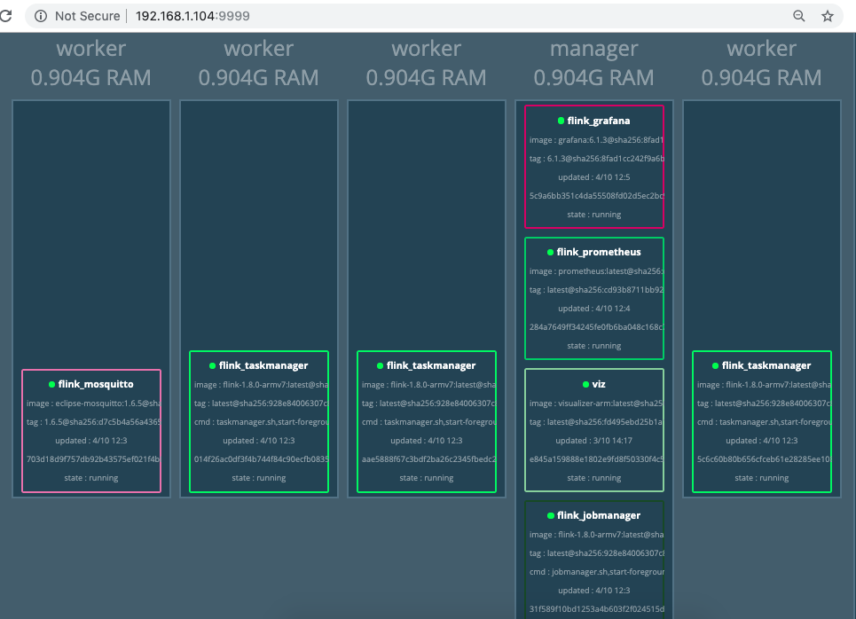
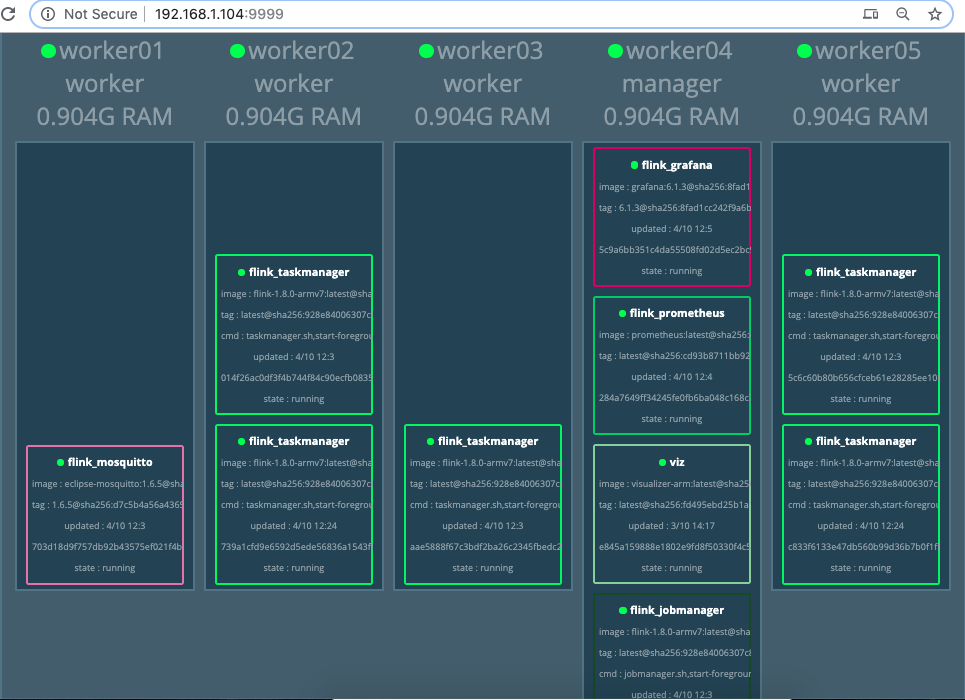

Flink on a Fridge¶
Overview¶
The purpose of this documentation is to explain the deployment of Apache Flink on a cluster of Raspberry Pis, aka the Fridge. We used Docker Swarm to connect the Pis, and used Docker Stack to deploy the custom built Flink docker image for ARMv7 processor.
Deployment¶
- First of all, the hardware:
- Few Raspberry Pi devices: we used 5 of Raspberry Pi 3b
- Each Pi requires a micro SD card to run an OS
- A network switch
- A router
- Power source
- Network cables to connect everything together

The Fridge constructed in INRIA, later used for the deployment of the Flink stack
Preparing the Pi cluster¶
- Install the Operating System on SD cards
Download the latest version of Raspbian Buster Lite and burn the image on SD cards using Etcher .

- Enable SSH
Create an empty file named ssh on the SD card to enable SSH.
$touch /Volumes/boot/ssh
- Setup the Pis
Plug the SD cards into Raspberries, SSH into it. Default host name would be raspberrypi.local and default password is raspberry.
$ssh pi@raspberrypi.local
Additionally you can use tools like Angry IP scanner to find out the correct host names of each Pis.
Set the hostname as you prefer by editing in:
$sudo raspi-config
And set the static IP address by editing /etc/dhcpcd.conf file
$interface eth0
$static ip_address= preferred IP
$static routers= router IP
$static domain_name_servers= preferred DNS, or you can set it as 8.8.8.8
Note
You might want to clean up some entries in ~/.ssh/known_hosts file on your machine.
This process should be replicated on each Pis.
Creating Docker Swarm¶
Now we can move on to creating Docker Swarm on a Cluster.
- Install Docker on each node:
$curl -fsSL https://get.docker.com | sh
- Create Swarm and join nodes
Initialize the Swarm cluster on one node using its IP. This node will act as a leader
$sudo docker swarm init --advertise-addr 192.168.0.104
The result will print the output, also you can run the following command to see the token for the Swarm.
$docker swarm join-token worker
And copy the result on other nodes to join the Swarm
$docker swarm join --token SWMTKN-1-4y0h8i1aktttxxpuyk8844jk8rd1nt3k9oxdrfujg97z4va39d-0fnsq9ayei2s88xeuim7jdosz 192.168.1.104:2377
Check on the Leader node whether if the swarm is working
$docker node ls
If the swarm initialization was successful, it should look like this. Now we’re ready to deploy Flink.

Additionally, you can deploy the visualizer service on a manager node to monitor the cluster on the browser.
docker service create \
--name=viz \
--publish=8080:[Your preferred port, 9999 for example]/tcp \
--constraint=node.role==manager \
--mount=type=bind,src=/var/run/docker.sock,dst=/var/run/docker.sock \
alexellis2/visualizer-arm:latest
{kind=link}
Building custom Flink image¶
Short story is there’s currently no native support for ARMv7 architecture for Flink Docker image. Also, you’ll have to download Flink and play with some configurations in order to able to run it on Raspberry Pi.
- Play with Flink configurations
You can read more about Apache Flink configurations here. Inside conf directory, edit the flink-conf.yaml file, change the default jobmanager.heap.size to 512m and taskmanager.heap.size as 256m. Those memory sizes were set considering the memory size of Raspberry Pi device and number of task managers might be deployed in the future.
Note
Additionally, you might want to change TM_MAX_OFFHEAP_SIZE=”1G” in bin/taskmanager.sh file
- Prepare the Dockerfile
There is an official Flink repository about building Apache Flink job cluster Docker image. But it requires users to include their own Flink jobs (JARs), and build a Docker image for custom Flink stack. Our goal is to avoid building a Docker image every time user made a change in a Flink job. Based on the Dockerfile of this repository, we can build our custom Flink Docker image using previously configured Flink.
FROM openjdk:8-jre-alpine
# Install requirements
RUN apk add --no-cache bash snappy libc6-compat
# Copy necessary files
COPY flink-1.8.0 /flink
ENV FLINK_HOME /flink
COPY /flink/flink-conf.yaml $FLINK_HOME/conf/flink-conf.yaml
COPY /flink/taskmanager.sh $FLINK_HOME/bin/taskmanager.sh
ENV PATH $PATH:$FLINK_HOME/bin
You can find the Dockerfile here.
Note
We’re using Flink 1.8.0 as a base. You have to replace it with your current version.
- Build the Flink image
To build the Docker image for ARMv7, let’s use Docker’s buildx feature from 19.03 version. For more information, you can find good examples such as this blog post.
This is the example of building the Docker image and pushing it to Docker Hub. By using the public Docker Hub repository, you can easily deploy/pull images to the Raspberry Pis.
$docker buildx build --platform linux/arm/v7 -t digitaljazz/flink-1.8.0-armv7:latest --push .
You can find the Flink Docker image for Raspberry Pi here
Deploying Flink image on a Cluster¶
- Prepare YAML file
You can make your own docker-stack.yaml file to configure the Flink image before deploying. For example:
version: "3"
services:
jobmanager:
image: digitaljazz/flink-1.8.0-armv7:latest
ports:
- "8081:8081"
command: jobmanager.sh start-foreground jobmanager
networks:
flinknet:
aliases:
- jobmanager
deploy:
replicas: 1
placement:
constraints:
- node.hostname == worker04
taskmanager:
image: digitaljazz/flink-1.8.0-armv7:latest
depends_on:
- jobmanager
command: taskmanager.sh start-foreground -Djobmanager.rpc.address=jobmanager
networks:
- flinknet
deploy:
replicas: 3
placement:
constraints:
- node.hostname != worker04
- node.hostname != worker01
networks:
flinknet:
driver: overlay
Here we used the previously built Docker image. You can specify how many Job/Task managers should run on which nodes. This one is the YAML we used to create Docker Stack with Flink, Mosquitto, Prometheus and Grafana.
Note
We’re going to use Docker stack to deploy on a swarm, so use YAML version 3
- Deploy the image
Run Docker stack deploy on a Leader node to deploy.
docker stack deploy --compose-file docker-stack.yaml flink
If you’re deploying the images for the first time, it might take some minutes to deploy.
You can check if the docker services by:
$docker service ls
{kind=link}
And on the browser:
{kind=link}
- Scaling the services
Additionally, you can scale (add or delete) the service of your choice. For example using:
$docker service scale flink_taskmanager=5
{kind=link}
And the result should look like this:
{kind=link}
Next step¶
Please find the whole repository here. You can run your own Flink job on a Jobmanager node using the web browser or the following command.
$JOBMANAGER_CONTAINER=$(docker ps --filter name=jobmanager --format={{.ID}})
$docker cp path/to/jar "$JOBMANAGER_CONTAINER":/job.jar
$docker exec -t -i "$JOBMANAGER_CONTAINER" flink run /job.jar